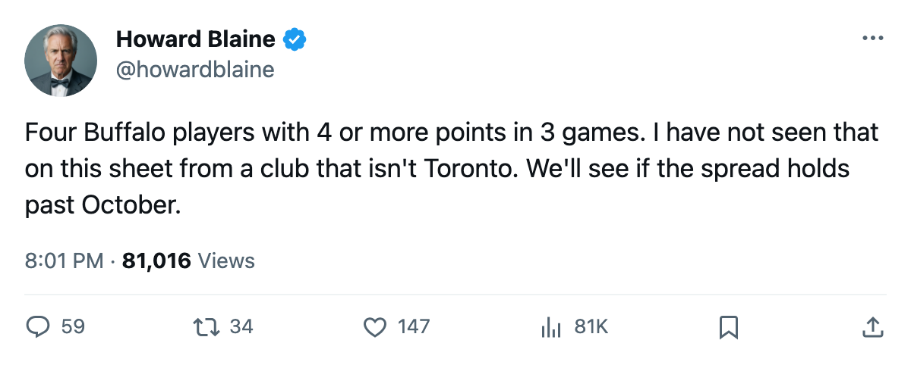
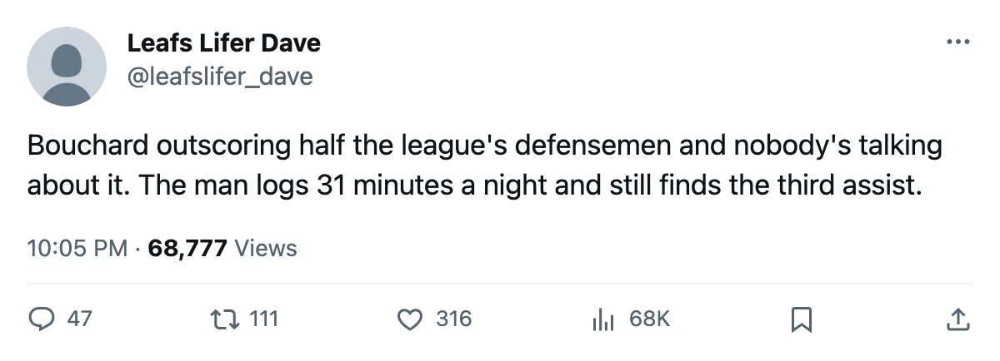

The Spread: Buffalo leads the league in goals through 3 games with 4 different players at 4 or more points
The Sabres have scored 11 in 3 games, the most in the league, and no single man carries more than 6 of them.
 Howard BlaineSenior writer, The Blaine Rankings · The Hockey Gazette
Howard BlaineSenior writer, The Blaine Rankings · The Hockey Gazette
 Buffalo Sabres has scored 11 goals in 3 games. No other club has more than 9. Per game, the Sabres sit at 3.67, second only to
Buffalo Sabres has scored 11 goals in 3 games. No other club has more than 9. Per game, the Sabres sit at 3.67, second only to  Boston Bruins's 4.00 in a single game, and ahead of
Boston Bruins's 4.00 in a single game, and ahead of  Calgary Flames,
Calgary Flames,  Tampa Bay Lightning,
Tampa Bay Lightning,  New York Islanders,
New York Islanders,  Nashville Predators and
Nashville Predators and  Philadelphia Flyers, all at 3.50 over 2 games.
Philadelphia Flyers, all at 3.50 over 2 games.
The distribution matters more than the total.  Daniel Briere80 has 6 points (2 goals, 4 assists).
Daniel Briere80 has 6 points (2 goals, 4 assists).  Owen Nolan86 has 5 (3 goals, 2 assists).
Owen Nolan86 has 5 (3 goals, 2 assists).  Chris Drury85 has 4 (2 goals, 2 assists).
Chris Drury85 has 4 (2 goals, 2 assists).  Joel Bouchard77, a defenseman, has 4 (1 goal, 3 assists). No other club in the league has four men at 4 or more points through any number of games this season.
Joel Bouchard77, a defenseman, has 4 (1 goal, 3 assists). No other club in the league has four men at 4 or more points through any number of games this season.  Atlanta Thrashers has three players at 4 or more (Kovalchuk 5, Savard 4, Heatley 4), but in only 2 games, and its total is 6 goals.
Atlanta Thrashers has three players at 4 or more (Kovalchuk 5, Savard 4, Heatley 4), but in only 2 games, and its total is 6 goals.
The spread matters because it is hard to defend. A coach can game-plan against a single scorer. He cannot game-plan against a center who draws 22.3 minutes a night, a 33-year-old right wing drawing 22.7, a left wing at 22.0, and a defenseman at 31.7 minutes who logs 4 points from the blue line. Bouchard's 3 assists in 3 games place him alongside  Tom Poti76 of
Tom Poti76 of  New York Rangers as the leading scorer among defensemen; Bouchard is 31, drafted 129th overall in the 5th round of 1992, and plays more minutes than any Buffalo forward.
New York Rangers as the leading scorer among defensemen; Bouchard is 31, drafted 129th overall in the 5th round of 1992, and plays more minutes than any Buffalo forward.
The record shows Buffalo has put players in the league's top 30 scoring column across seasons more often than most of the field: 49 appearances, tied with Boston Bruins and Philadelphia Flyers, behind  Toronto Maple Leafs (69),
Toronto Maple Leafs (69),  Edmonton Oilers (62), Nashville Predators (59),
Edmonton Oilers (62), Nashville Predators (59),  Colorado Avalanche and
Colorado Avalanche and  Mighty Ducks of Anaheim (57 and 56). The Sabres sit in the second tier of organizational scoring depth. What distinguishes this group is the simultaneity: four players producing at the same time, at different positions, across a 3-game window that says nothing yet about April.
Mighty Ducks of Anaheim (57 and 56). The Sabres sit in the second tier of organizational scoring depth. What distinguishes this group is the simultaneity: four players producing at the same time, at different positions, across a 3-game window that says nothing yet about April.
The 3 games also say this about the team's structure: the top line's minutes are long and the scoring is not concentrated in them. Briere at 22.3 and Nolan at 22.7 are the heaviest forwards; Drury at 22.0 is not far behind. Bouchard at 31.7 is the highest-minute player on the roster. Buffalo's offense, through this small sample, runs on its top 4 players logging heavy minutes and producing together.
The standings say 4 points in 3 games. The goals say more: 11 for, 9 against, a +2 differential tied for second in the league behind Toronto Maple Leafs at +5. The offense is carrying the defensive number. Buffalo's 9 goals against is the most any club has allowed through 3 games; the offense is outrunning the back end.
What Buffalo has not done is beaten a team currently above .500. The 2-1-0 record includes a win over  Ottawa Senators (0-2-0), a loss to
Ottawa Senators (0-2-0), a loss to  Montreal Canadiens (1-0-1), and a win over
Montreal Canadiens (1-0-1), and a win over  Chicago Blackhawks (1-0-1). The Sabres face New York Rangers on October 17, the Atlantic's first-place club at 1-0-1, and that game is the first honest test of whether the spread holds against a defense that has given up 8 in 3.
Chicago Blackhawks (1-0-1). The Sabres face New York Rangers on October 17, the Atlantic's first-place club at 1-0-1, and that game is the first honest test of whether the spread holds against a defense that has given up 8 in 3.

